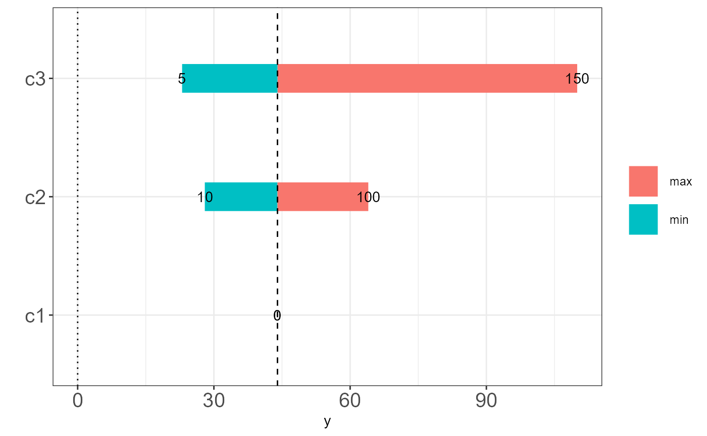

vignettes/scenario-sensitivity-analysis.Rmd
scenario-sensitivity-analysis.RmdDeterministic or scenario sensitivity analysis is a common part of any cost-effectiveness analysis [@Briggs2012]. Here we will carry this out for a simple decision tree. This involves explicity specifying values for particular branch probability and/or values and calculating the total expected value.
library(CEdecisiontree, quietly = TRUE) library(assertthat, quietly = TRUE) library(treeSimR, quietly = TRUE) library(tibble, quietly = TRUE) library(tidyverse, quietly = TRUE) library(purrr, quietly = TRUE)
We create a complete design meaning all combinations on the grid of input values. Alternatively, we may only want to do a one-way analysis and so would set the non-varied term to some common baseline distribution or fixed value. In our example, we will choose three values for each parameter. We can think of this as a worst-, most likely and best-case scenario.
p <- c(NA_real_, 0.4, 0.6) c2 <- c(10, 50, 100) c3 <- c(5, 40, 150) c_grid <- expand.grid(c2 = c2, c3 = c3) %>% cbind(c1 = 0L, .) %>% t() %>% as.data.frame() c_grid #> V1 V2 V3 V4 V5 V6 V7 V8 V9 #> c1 0 0 0 0 0 0 0 0 0 #> c2 10 50 100 10 50 100 10 50 100 #> c3 5 5 5 40 40 40 150 150 150
Then define the decision tree structure.
We can now loop over the inputs and generate a complete tree object for each cost combination.
tree_dat_sa <- list() for (i in seq_along(c_grid)) { tree_dat_sa[[i]] <- define_model( tree_dat = list(child = child, dat = data.frame( node = names(child), prob = p, vals = c_grid[[i]]) )) }
This results in a list of trees.
str(tree_dat_sa, 1) #> List of 9 #> $ :List of 2 #> ..- attr(*, "class")= chr [1:2] "tree_dat" "list" #> $ :List of 2 #> ..- attr(*, "class")= chr [1:2] "tree_dat" "list" #> $ :List of 2 #> ..- attr(*, "class")= chr [1:2] "tree_dat" "list" #> $ :List of 2 #> ..- attr(*, "class")= chr [1:2] "tree_dat" "list" #> $ :List of 2 #> ..- attr(*, "class")= chr [1:2] "tree_dat" "list" #> $ :List of 2 #> ..- attr(*, "class")= chr [1:2] "tree_dat" "list" #> $ :List of 2 #> ..- attr(*, "class")= chr [1:2] "tree_dat" "list" #> $ :List of 2 #> ..- attr(*, "class")= chr [1:2] "tree_dat" "list" #> $ :List of 2 #> ..- attr(*, "class")= chr [1:2] "tree_dat" "list"
Now it is straightforward to map over each of these trees to obtain the total expected values.
res <- map_dbl(tree_dat_sa, dectree_expected_values) res #> [1] 7 23 43 28 44 64 94 110 130
Lets create a tornado plot showing a one-way sensitivity analysis. We’ll use my ceplot. By specifying the output data as a model frame it is handled appropriately.
library(ceplot) library(magrittr) library(reshape2) library(plyr) library(purrr) library(dplyr) library(ggplot2) sa_dat <- as.data.frame(cbind(t(c_grid), res)) sa_model_dat <- model.frame(formula = res ~ c1 + c2 + c3, data = sa_dat) sa_model_dat %>% s_analysis_to_tornado_plot_data %>% ggplot_tornado() #> [1] "baseline values estimated as: 0 50 40 44"
